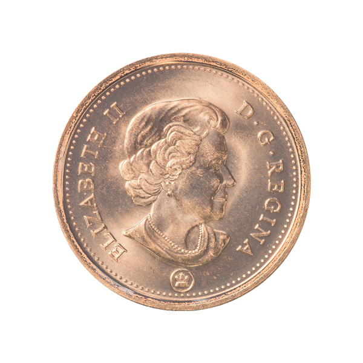
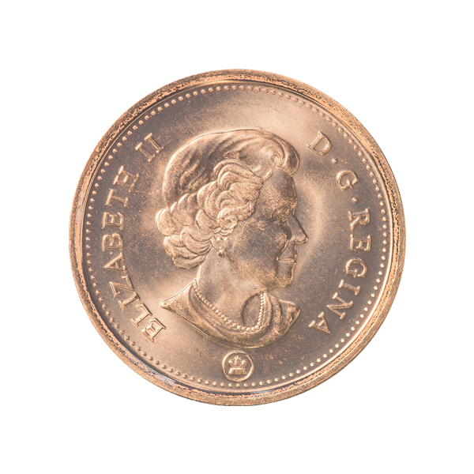

Кленовый лист
Артикул: 542248-94
Байкал — самое древнее озеро на нашей планете, известное своей удивительной красотой. Чистая байкальская вода, насыщенная кислородом, издавна считается целебной. Байкал является хранилищем 20% мировых и 90% российских запасов пресной воды.
На аверсе монеты изображено озеро Байкал, выполненное в цвете. В нижней части надпись — год чеканки 2017. Монета укомплектована подарочным демонстрационным футляром.
Цена 4 410 ₽
| Год | 2003 |
| Номинал на монете, ед. нац. валюты | 50000 Кипов |
| Страна-эмитент | Лаосская Народно-Демократическая Республика |
| Качество чеканки | PR |
| Металл | Серебро 925 проба |
| Масса хим. драгоценного металла в монете, гр | 33 г. |